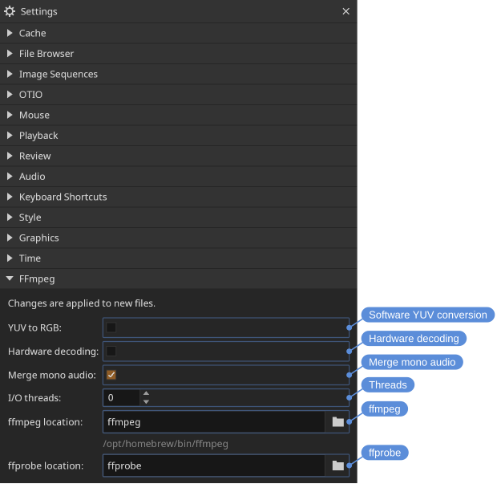

File formats
DJV ships with support for the following formats:
- Images and image sequences: Cineon, DPX, JPEG, OpenEXR, PNG, PPM, Radiance HDR, SGI, TGA, BMP, TIFF, WebP (still and animated); HEIC and HEIF on macOS
- Movie codecs: MJPEG, MPEG-2, MPEG-4, AV1, VP9, APV, CineForm, GIF
- Audio codecs: FLAC, MP3, WAV
- Timelines: OTIO, OTIOZ
- Experimental: USD
Different formats may be available depending on how DJV was built, or by using an external FFmpeg command.
FFmpeg
The FFmpeg plugin provides support for movie and audio files. Only a limited set of codecs is enabled in the open source packages; anything the packaged FFmpeg cannot decode is read with an external FFmpeg command instead, or you can build from source.
The command is not something to turn on. The plugin decides per file: when the packaged FFmpeg has no decoder for what the file holds, or cannot open the file at all, FFmpeg runs as a sub-process and streams decoded video and audio to DJV; otherwise the file is read by the FFmpeg libraries. So bringing your own FFmpeg is a matter of installing one, and files that the packaged build reads perfectly well go on being read by it.
A file that carries each audio channel as its own mono stream, as broadcast MXF does, is read as one track with a channel per stream. The Merge mono audio setting in the FFmpeg section of the Settings tool turns this off, so only the first stream plays.
Which of the two read a file is written to the log, since it is otherwise not visible from the outside.
The ffmpeg location and ffprobe location settings take a name or a location. A name on its own is looked for on the system path, and on macOS and Linux in the places the package managers install to as well, since an application started from the desktop is not given the path a shell has. Under each is where DJV found the command, or No ffmpeg found. where there is none to find — which also says which one is being used where several are installed.

Changes take effect on newly opened files; reload (Ctrl+R) to apply them to the current file.
- Software YUV conversion - Convert YUV to RGB on the CPU instead of on the GPU. Off by default: the decoded YUV frame is uploaded directly and converted in the display shader, which is faster and avoids an extra frame copy. Enable this to perform the conversion in software before display.
- Hardware decoding - Decode video on the GPU (VideoToolbox on macOS, Direct3D 11 on Windows) when the file is compatible. Off by default. Files that are not compatible will automatically fall back to software decoding.
- Threads - The number of threads used for decoding. The default,
0, lets FFmpeg choose automatically based on the system. - ffmpeg, ffprobe — Where to find the external commands. Leave them as the command names to find an installed one automatically. Click the field to show the full path, or the folder icon to browse for it.
Partial image sequences
A sequence does not have to be complete. A render still in progress has only the frames written so far, and a render distributed across several machines can gain them out of order. DJV opens such a sequence and lets you choose what happens where the frames are not there.
The choice is the Missing frames setting in the Image Sequences section of the Settings tool:
- Error — the frame does not read, and the error is reported in the status bar.
- Hold — the nearest frame before it is repeated.
- Black — a blank frame.
- Skip — the missing frames are left out, so only the frames that are there play and the sequence is as long as they are.
- Gaps — the missing frames are left as holes, so every frame keeps the time it had and the gaps are visible on the timeline.
The first three are decided as each frame is read, so changing between them applies to what is already open, and a timeline that states its own policy is followed instead. Skip and Gaps decide what the timeline is built from, so they apply only to an image sequence opened on its own, and changing to or from one of them opens the file again.
Which frames a sequence has is found by reading them, not by scanning at startup, so a complete sequence costs nothing and a render in progress picks up frames as they land. Skip and Gaps are the exception: they have to look for the frames once in order to build the timeline, so they are a snapshot, and frames written afterwards appear when the file is opened again.
Frame numbers
Under Skip the sequence is shorter than the range it covers, so counting from the start no longer gives the frame number. DJV shows the number the frame actually has — in the current time, on the timeline, and when you type a frame number to go to it. A sequence holding frames 1, 11, 21, 31 and 88 to 90 plays as seven frames, and the fourth of them reads as frame 31.
Typing a frame number the sequence does not have goes to the nearest frame before it, so the frame you land on is the frame you are shown.
This holds while the timeline plays one media through, whether in one piece or in the runs a sparse sequence is cut into. A timeline that cuts between different media, or plays the same media twice, has no single numbering to show: the number would restart at every cut, and a clip whose media runs at a different rate than the timeline would repeat it from one frame to the next. The current time and the timeline ruler count the timeline itself there.
Marking the frames that are not there
Under Hold and Black the picture on screen is not the frame that was asked for, and nothing about it says so — a render part way through can look finished. Turn on Indicate missing in the same settings section to draw a cross over any such picture; the width and colour are alongside it. The time in the heads up display also says which frame is being held, for example held from 1.
This only changes what is drawn, so unlike the setting above it applies to whatever is already open.
Stating the range
The frames found on disk are not always the range you want. A render that will end up as frames 1 to 100 has fewer than that today, and watching it over the range it will become is often more useful than watching it over the range it has reached.
Set the range for an open file with the frame range fields in the Files tool, which reopens it over that range. From the command line use -frameRange (or -fr), which applies to the first file opened:
djv render.#.exr -frameRange 1-100Image sequences with audio
Audio can be paired with an image sequence either automatically or manually.
To pair audio automatically, open the Image Sequences section in the Settings tool. You can either list the file extensions DJV should look for (for example, .wav .mp3), or provide a specific file name to match.
To pair audio manually, use the menu File > Open With Audio.
Timelines
OTIO timelines are opened like any other file. An .otio file references other pieces of media, and relative paths are relative to the .otio file. An .otioz bundle carries the media inside the one file: it is self-contained, so it can be moved or sent somewhere else, and DJV reads the media from the bundle itself rather than from disk.
A timeline's layers are those of its first video clip; choosing one applies to every clip that has it.
Media references
A clip in an OTIO timeline can carry more than one version of its media as media references — for example a proxy and a full resolution render, selected by name.
DJV lists the names it finds in the File > Media References menu, and in a menu on the file's row in the Files tool once the file has been opened. Choosing one switches every clip in the timeline to the reference with that name; clips that do not have one keep the reference they were authored with. Switching changes only what is read — the layout and zoom stay where they are — and the Information tool and HUD describe the reference being read.
Each file keeps its own choice, so an A/B comparison can put one version against another — the proxy against the full resolution render of the same timeline. The File menu and the shortcut change the A file; the Files tool changes any of them. The choice is saved with reviews and playlists.
Locations: File menu, Files tool
File > Next Media Reference (Shift+M) steps to the next name.
To open with a media reference, give it on the command line, e.g., djv shot.otio -mediaReference Proxy; it applies to the files opened, not the B file. From a script, File/MediaReference chooses one by name, e.g., -command 'File/MediaReference { "key": "Full" }', for the A file or, with "file", the one at that index in the file list. A name a file does not have is reported in the log with the ones it does. OTIO's default reference is shown as Default, and either name works.
OTIO spatial coordinates
OTIO files can give each clip a bounding box, called the spatial coordinates, that describes the area the image occupies on a canvas shared by the whole timeline. DJV uses these boxes to size and position the images.
The most common use is playing back clips that were rendered at different resolutions. Give the clips the same box and they are all displayed at the same size, so the view no longer jumps between them when playback moves from one clip to the next. This also keeps the zoom and pan steady across a cut, which is useful for checking continuity between shots.
The coordinates are unit-less, so boxes of 0, 0, 1920, 1080 and 0, 0, 16, 9 describe the same area. DJV works out the size in pixels from the first clip that has coordinates, together with the resolution the timeline is working at. The Y axis points up, unlike image coordinates, so a clip with a larger Y value is displayed higher.
Clips can also be given different boxes to place them side by side, or to position a smaller image within a larger frame.
The OTIO section in the Settings tool controls how the coordinates are used:
- None — Ignore the spatial coordinates. Clips are sized from their own resolution.
- Coordinates — Use the spatial coordinates where clips provide them. This is the default.
- Normalize — Use the spatial coordinates, and display clips that do not have them at the size of the first clip. Use this to play clips of differing resolutions at the same size when the timeline was not authored with spatial coordinates.
The authored coordinates are shown in the Information tool, along with the canvas DJV derived from them.
USD
USD support is currently experimental, and is not included in the packages; it is available when building from source. When a USD file is opened, DJV renders it to an image sequence using the Hydra renderer.
DJV picks the rendering camera in this order:
- The clip name, if the USD file is referenced from an OTIO file
- The primary camera in the scene
- The first camera found in the scene
- A temporary camera generated to frame the scene